Fin
dall’’inizio dei tempi le varie razze hanno decorato i loro corpi con
tatuaggi simbolici per i più svariati motivi. Alcuni abilissimi creatori di
tatuaggi hanno tramandato una tecnica particolare che consente al tatuaggio di
divenire catalizzatore di energia magica presente ad Arelia. Quando questi
tatuaggi sono fatti a regola d'arte donano a chi li possiede particolari poteri
in modo permanente. Si tratta di tatuaggi magici, che si considerano come
oggetti magici qualora sottoposti ad effetto di una magia "detect
magic".
Solo chi possiede questa specifica competenza può fare tatuaggi rituali :
Ritual Tattoos
(2
slots, Rogue,
Destrezza, penalità
variabile)
Questa competenza permette
a chi la possiede di fare tatuaggi speciali, utilizzando un antico metodo
rituale e prodotti speciali. Questi tatuaggi, a differenza dei normali, possono
dare a chi li porta speciali bonus magici che dipendono dal tatuaggio prescelto.
Alcuni tatuaggi inoltre sono limitati a particolari razze o classi. In ogni caso,
(a meno che il tatuaggio non riesca con un 1 naturale) una creatura può avere solo
uno di questi tatuaggi sul proprio
corpo, altri eventuali tatuaggi oltre il primo non avranno alcun effetto. Si
tratta di tatuaggi molto dolorosi per cui chi si sottopone a questo trattamento
deve superare un tiro salvezza contro morte o subire un punto follia. I
personaggi dotati della competenza Pain Tollerance possono evitare il tiro
salvezza qualora riescano in una prova nella competenza. Al termine
del periodo richiesto per effettuare il tatuaggio chi lo effettua deve superare
una prova di abilità se la prova riesce il tatuaggio donerà i bonus previsti,
altrimenti sarà considerato un comune tatuaggio. Se la prova riesce con un 1
naturale il tatuaggio sarà stato recepito al meglio e chi lo ha ottenuto potrà
farsene tatuare uno nuovo e non subirà alcun punto follia. Se la prova è fallita con 20
naturale chi si è sottoposto al trattamento subisce 1 punto follia (senza poter
effettuare il tiro salvezza) e perde permanentemente 1 punto ferita. In ogni
caso di fallimento sarà sempre possibile, trascorso un mese, sottoporsi
nuovamente al rituale per attivare il tatuaggio non riuscito. Solitamente, il rischio è a carico di chi decide di farsi tatuare. Con la
stessa competenza è possibile rimuovere i tatuaggi. In questo caso verranno
usati unguenti rigenerativi per un valore pari alla metà del costo dei prodotti
usati per fare il tatuaggio, il tempo richiesto però raddoppierà. Per la
rimozione non è necessario effettuare la prova sulla competenza che si
considera sempre utilizzata con successo e chi subisce il trattamento non
rischia di accumulare punti follia. Una volta rimosso sarà possibile incidere
un nuovo tatuaggio sulla medesima creatura. Oltre agli inchiostri speciali, gli
strumenti per effettuare i tatuaggi hanno un costo di 50 monete d'oro sulle
quali si paga la manutenzione ordinaria (strumenti di precisioni da 300 monete
d'oro daranno un bonus di +1 alla prova).
Ogni tatuaggio richiede inoltre un determinato numero di giorni per essere inciso nonché l'uso di una certa quantità di inchiostri rari.
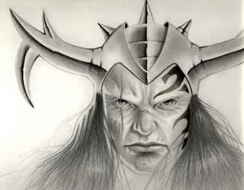
Tatuaggio
della ferocia
Requisiti:
Qualsiasi classe appartenente al gruppo "warrior"
Tempo di lavoro: 10 giorni
Modificatore alla prova: -3
Costo dei prodotti: 350 g.p.
Effetto: Questo tatuaggio
rende i guerrieri particolarmente feroci in combattimento. Una volta al giorno
il guerriero può attivare il potere del tatuaggio su un singolo attacco
(dovendo scegliere nella fase dell'iniziativa, prima cioè di effettuare il tiro
per colpire) per ottenere il massimo del risultato di dado di danno
possibile.
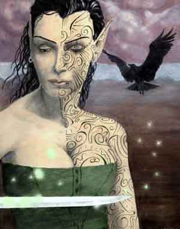
Tatuaggio
del mentalista
Requisiti: Maghi
Giorni di lavoro:
Costo dei prodotti:
Effetto:
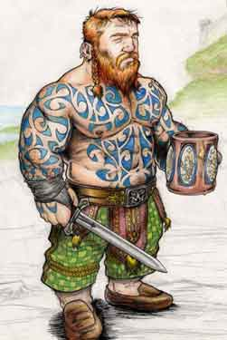
Tatuaggio
della resistenza nanica
Requisiti:
Nani
Tempo di lavoro: 30 giorni
Modificatore alla prova: -5
Costo dei prodotti: 1000 g.p.
Effetto:
Quando il
nano attiva questo tatuaggio può decidere di aumentare, temporaneamente ed una
sola volta al giorno, i suoi punti ferita. Il tatuaggio funziona una volta
attivato con una percentuale di successo pari al 70% - 5% per punto ferita che
il nano vuole cumulare (fino ad un massimo di 13 punti ferita con il 5% di
successo). In ogni caso questi punti ferita saranno i primi ad essere eliminati
dai danni avversari e non possono essere recuperati con cure normali o magiche,
inoltre anche se non eliminati l'effetto del tatuaggio terminerà in 1
ora.
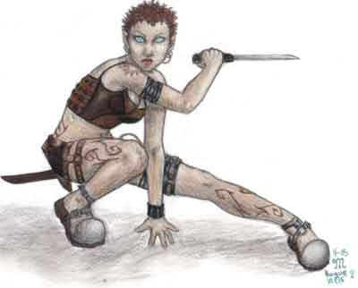
Tatuaggio
dell'agilità
Requisiti:
Qualsiasi classe al gruppo "rogue"
Tempo di lavoro: 25 giorni
Modificatore alla prova: -4
Costo dei prodotti: 850 g.p.
Effetto: Questo tatuaggio
può essere attivato una volta al giorno e permette al ladro di schivare un
attacco (si usano le regole della schivata per comprendere quale attacchi sia
possibile schivare). Quando il ladro decide di usare questo tatuaggio su un
attacco questo si considererà come schivato con successo (prima del tiro per
colpire) il nemico, quindi, colpirà il ladro solo con un tiro pari a 20
naturale. In nessun caso, però, questo colpo avrà sul ladro effetti
critici.
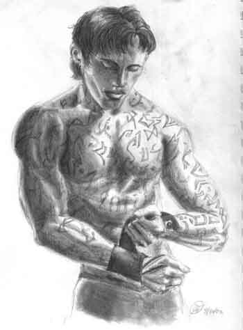
Tatuaggio
delle antiche rune
Requisiti: Utenti di magia (Maghi, Reaver)
Tempo di lavoro: 30 giorni
Modificatore alla prova: -5
Costo dei prodotti: 1000 g.p.
Effetto: Questo tatuaggio catalizza le energie magiche e le mette a disposizione
del suo possessore. Una volta al giorno, quando lancia una magia, il possessore
può attivare il potere del tatuaggio (indipendentemente dal suo positivo
funzionamento). Se il tatuaggio funziona l'utente di magia avrà
risparmiato tutti i punti necessari al lancio della magia. La percentuale di
funzionamento è pari al 70% - 10% per livello di potere della magia che si
desidera lanciare. In ogni caso non può provare a lanciare tramite il tatuaggio
magie senza disporre dei punti magia necessari al lancio dell'incantesimo.
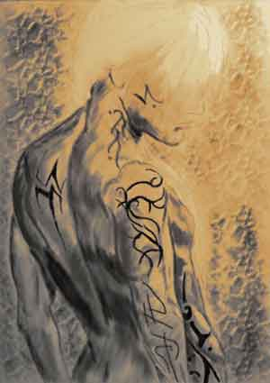
Tatuaggio
della battaglia
Requisiti:
Qualsiasi classe
appartenente al gruppo "warrior"
Tempo di lavoro: 30 giorni
Modificatore alla prova: -5
Costo dei prodotti: 1000 g.p.
Effetto: Questo tatuaggio
rituale aiuta i guerrieri nel combattimento. Una volta al giorno, quando
effettua un attacco spendendo punti combattimento, il possessore
può attivare il potere del tatuaggio (indipendentemente dal suo positivo
funzionamento). Se il tatuaggio funziona il guerriero avrà risparmiato
tutti i punti combattimento necessari al compimento dell'attacco desiderato. La
percentuale di funzionamento è pari al 66% - 2% per ogni punto combattimento
speso. In ogni caso il guerriero non può provare ad effettuare un colpo di
combattimento usando il tatuaggio senza disporre dei punti di combattimento
necessari ad effettuare il colpo prescelto.
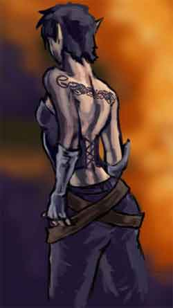
Tatuaggio
della seduzione
Requisiti:
"
Tempo di lavoro: giorni
Modificatore alla prova:
Costo dei prodotti: g.p.
Effetto:
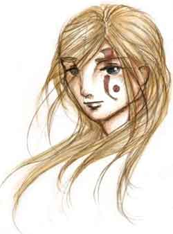
Tatuaggio
della devozione
Requisiti:
Solo appartenenti alla classe "cleric"
Tempo di lavoro: 30 giorni
Modificatore alla prova: -4
Costo dei prodotti: 750 g.p.
Effetto: Questo tatuaggio
rituale simboleggia l'estrema devozione di un chierico per la sua divinità e
concede al chierico di invocarne l'aiuto in caso di bisogno. Una volta al giorno, quando
il chierico vuole lanciare un incantesimo, può chiedere l'intervento della
divinità affinché gli conceda di sostituirlo con un altro dello stesso livello
di esperienza a cui abbia accesso (in pratica trasformerà quella magia
memorizzata in un incantesimo libero che però dovrà immediatamente lanciare).
Nella fase delle intenzioni il chierico, quindi, deciderà che incantesimo vuole
modificare e con quale modificarlo. Se il tatuaggio funziona il chierico potrà
lanciare (nello stesso round in cui ha chiesto la modifica) la magia voluta ed
ovviamente perderà quella sostituita. La percentuale di funzionamento è
pari al 70% - 10% per livello di potere della magia che desidera lanciare. Se il
tatuaggio non funziona il chierico non solo non potrà lanciare la magia voluta
ma perderà anche quella che voleva sostituire (ma non i componenti materiali)
ed il round in corso.
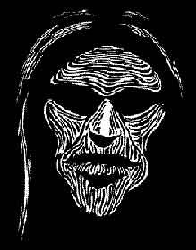
Tatuaggio del terrore
Requisiti:
Qualsiasi creatura con allineamento malvagio (evil)
Tempo di lavoro: 20 giorni
Modificatore alla prova:
-4
Costo dei prodotti:
750 g.p.
Effetto:
Questo tatuaggio rende il viso di chi lo possiede come una maschera orrenda
ricoperta da righe nere. Il possessore perde 1 punto permanente di carisma ma
può attivare il tatuaggio una volta al giorno per spaventare un singolo
avversario che si trovi entro 10 metri di distanza e lo guardi in viso. Quando
attiva il tatuaggio l'avversario si considera sottoposto (all'inizio del round)
all'incantesimo "cause fear" (primo livello di potere clericale,
potrà effettuare il tiro salvezza per evitarne gli effetti). Si noti che
essendo l'attivazione una free action il possessore può nello stesso round effettuare
una qualsiasi altra azione.
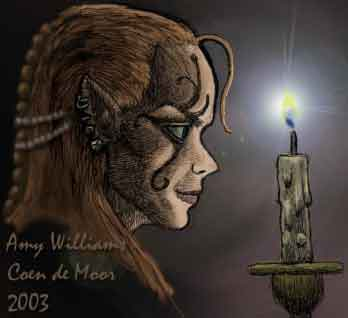
Tatuaggio
della divinazione
Requisiti:
"
Tempo di lavoro: giorni
Modificatore alla prova:
Costo dei prodotti: g.p.
Effetto:
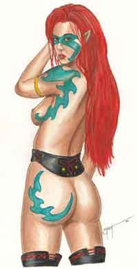
Tatuaggio
degli elfi silvani
Requisiti:
Solo per elfi silvani
Tempo di lavoro: 30 giorni
Modificatore alla prova:
-5
Costo dei prodotti:
1000 g.p.
Effetto:
Una volta al giorno l'elfo può decidere di attivare il tatuaggio e trasformarsi
con tutti i suoi oggetti in un leopardo di foresta (manterrà la propria thac0
naturale, i propri punti ferita ed i tiri salvezza, acquisirà invece Classe
armatura, attacchi, thac0 e fattore movimento del giaguaro). La trasformazione
durerà 1 ora ed il possessore non potrà decide di ritrasformarsi prima della
scadenza.
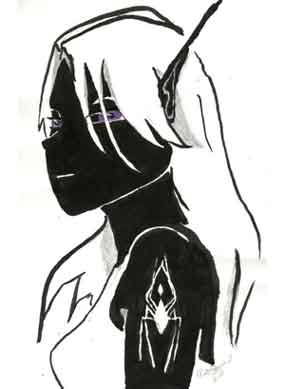
Tatuaggio
degli elfi scuri
Requisiti:
Solo per elfi scuri
Tempo di lavoro: 30 giorni
Modificatore alla prova:
-5
Costo dei prodotti:
1000 g.p.
Effetto:
.